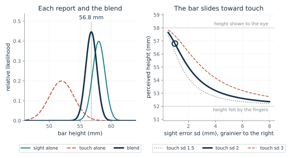
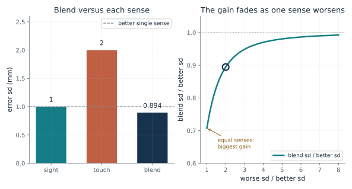
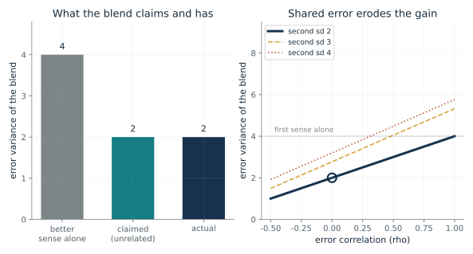
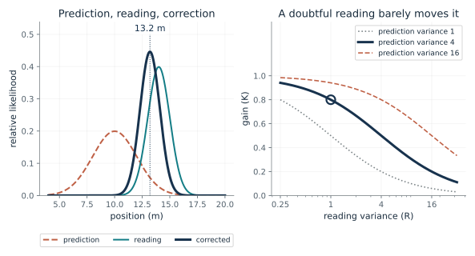
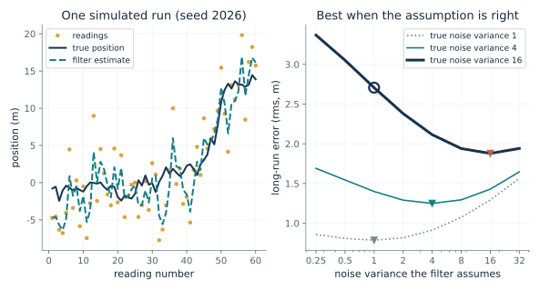
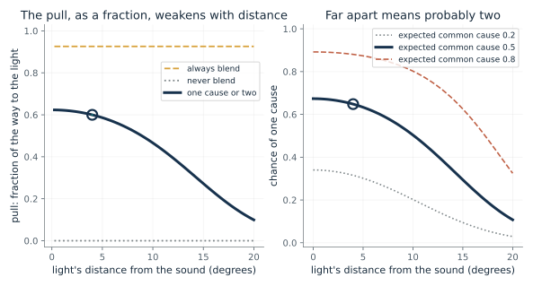
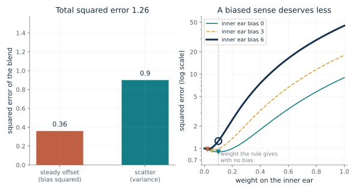

Where does a bar seem to be when sight and touch disagree?
From Chapter 2, The bar seemed to be where the clearer sense put it
If the eye is shown 58 mm and the fingers feel 52 mm, how tall does the bar seem, and how does that change as the picture grows grainy?
Each sense gives a height and misses by some typical amount. Dividing one by the squared miss gives a precision, and the rule counts each report in proportion to its precision. A sense with half the error sd has four times the precision, so a sharp sense gets a large share and a fuzzy one a small share, never zero.
Predict first: With touch at 2 mm, predict how large the sight error sd must be for the bar to seem exactly halfway, 55 mm, before moving the slider.

Sight error sd (mm), grainier is larger: 1.0 · Touch error sd (mm): 2.0
What happens: At sight sd 2 mm, equal to touch's, the two precisions match, each sense gets half the say, and the bar seems 55 mm tall. Making the picture grainier than that hands the larger share to touch.
With sight error sd 1 mm and touch 2 mm, sight gets 0.8 of the say, so the bar seems 56.8 mm tall, 80 percent of the way from the felt height to the seen one. The blend's error sd, 0.894 mm, is below both senses.
- Weight on sight
- 0.8
- Weight on touch
- 0.2
- Blended height (mm)
- 56.8
- Blended error sd (mm)
- 0.894
Any system that combines two noisy reports of one quantity has to decide how much each counts. This rule answers that when the error spreads are known and the errors are unrelated.
Four observers in the Ernst and Banks experiment judged as if each sense counted in proportion to its reliability. That is a fit to behavior, not a finding about neurons.
A sensor-fusion routine can compute the same weights from the stated error spreads of its sensors, if their errors are unbiased and unrelated.
Show the calculation
Precisions: sight 1 = 1/1^2 and touch 0.25 = 1/2^2. Height = (1 x 58 + 0.25 x 52) / (1 + 0.25) = 56.8 mm. Blended sd = 1/sqrt(1.25) = 0.894 mm.
The equations and symbols
- mu_1, mu_2
- the seen height (58 mm) and the felt height (52 mm)
- sigma_i
- error standard deviation of sense i in mm; it must be above zero
- tau_i
- precision of sense i, one divided by its squared standard deviation
- s-hat
- the blended height
- tau_post
- precision of the blend: the two precisions added
Each sense is unbiased, the two errors are unrelated, and each error sd is known and above zero. The formula describes a blend of two reports; it does not show that the brain does this arithmetic.
Check your understanding: The picture is very grainy (sight sd 4 mm) and touch sd is 2 mm. Which sense gets more say, and what height does the bar seem?
Book source: Chapter 2, The bar seemed to be where the clearer sense put it. Illustration C02-D01. Formula. Book formula (the Ernst and Banks rule). The 58 and 52 mm heights are the chapter's example; the error sds are made-up illustrations, not measurements from the study, whose points appear only on a graph.
Why can two senses beat the better one?
From Chapter 2, Two senses judge more finely than either
If touch is the weaker sense, does adding it help, and when does it help most?
Picking the better sense ignores what the other knows. Two reports whose errors are unrelated partly cancel each other's misses, so the blend scatters less than either. The gain is greatest when the senses are equally sharp and fades as one gets worse. Doubling a sense's error sd cuts its precision to a quarter, and its share follows, so a sense loses say faster than it loses accuracy.
Predict first: With sight at 1 mm, predict which touch error sd gives the largest gain over the better sense, then check it.

Touch error sd (mm): 2.0 · Sight error sd (mm): 1.0
What happens: With two equally sharp senses, the blend's sd is 1/sqrt(2), about 0.707 of either sense's. With sight held at 1 mm, every other touch setting gains less. (Sight 2 mm with touch 2 mm, also equal senses, gives the same ratio, 0.707, at a larger absolute sd, 1.41 mm.)
Precisions add, so the blend's error sd, 0.894 mm, is below the better sense's 1 mm, at 0.894 of it. Touch holds 0.2 of the say, and the gain shrinks as the senses become unequal.
- Blended error sd (mm)
- 0.894
- Better single sense (mm)
- 1
- Blend as a fraction of the better sense
- 0.894
- Share of the say held by touch
- 0.2
Picking the better source throws away what the other one knows. Two unrelated reports partly cancel each other's misses, so a combiner that keeps both can do better than the best single source.
In the experiment the gain over the better sense was clearest when the picture was grainy and slight with a clear picture, as the chapter reports.
A system that fuses two sensors gains most when they are about equally reliable, and little when one is far worse.
Show the calculation
Precisions 1 and 0.25 add to 1.25. Blended sd = 1/sqrt(1.25) = 0.894 mm. Touch's share = 0.25/1.25 = 0.2. Ratio to the better sense = 0.894/1 = 0.894.
The equations and symbols
- tau_1, tau_2
- precisions of the two senses
- tau_post
- precision of the blend
- sigma_post
- error standard deviation of the blend, in mm
Unbiased, unrelated errors with positive finite sds. If the errors are related or biased, the blend can be worse than the better sense; the next illustrations show how.
Check your understanding: Two independent thermometers have error sds of 2 and 4 degrees. What is the blend's error sd, and how does that compare with the better thermometer?
Book source: Chapter 2, Two senses judge more finely than either. Illustration C02-D02. Formula. Book formula with made-up error sds (sight 1 mm and touch 2 mm are the chapter's constructed numbers; the sight sd can also be 2 mm). The study's thresholds are proportional to, not equal to, standard deviations, so only ratios transfer.
When do two agreeing thermometers count as one witness?
From Chapter 2, Two thermometers are one witness
If two sensors share some of their error, how much does their agreement really tell us?
The blend's variance has a cross term that depends on how far the two errors move together. Two thermometers in the same sunny window that both read two degrees high agree with each other and are both wrong, so they are closer to one witness repeated. The usual weights assume the cross term is zero; when the errors are positively related, the real variance exceeds the claimed one (a negative correlation does the opposite).
Predict first: Hold the second sensor's error sd at 3. Predict whether positively related errors can make the precision-weighted blend worse than the better sensor alone, and from about which correlation.

Error correlation (rho): 0.0 · Second sensor error sd: 2.0
What happens: At sd 3 and correlation 0.5 the blend's variance is about 4.05, above the better sensor's 4. The weights were chosen as if errors were unrelated, and the blend has become worse than the better sensor alone. The tipping point is a correlation near 0.48.
The blend weights the first sense 0.5 and the second 0.5 as if their errors were unrelated, claiming variance 2. With correlation 0 its actual variance is 2, which is better than the better sense.
- Actual error variance
- 2
- Variance claimed if errors were unrelated
- 2
- Better sense alone
- 4
- Blend compared with the better sense
- better than the better sense
A fusion rule that adds precisions without asking whether errors are shared can report confidence it has not earned. Asking whether sources err together comes before asking how to weight them.
In the slant study, six of eight observers did better with two visual cues than with either alone, and the fit held for three only when some shared error was allowed. Both cues reach the brain through one image.
A system built to assume unrelated errors adds the precisions anyway. With positively related errors it reports more reliability than it has.
Show the calculation
w1 = (1/2^2) / (1/2^2 + 1/2^2) = 0.5, w2 = 0.5. V = 0.5^2 x 4 + 0.5^2 x 4 + 2 x 0.5 x 0.5 x (0) x 2 x 2 = 2. Claimed (rho = 0 and optimal weights): 1/(1/4 + 1/4) = 2.
The equations and symbols
- V
- error variance of the weighted blend
- w_1, w_2
- weights, which add to one
- sigma_1, sigma_2
- error standard deviations of the two reports
- rho
- error correlation, from -1 to 1; 0 means no linear correlation
Nonnegative weights that add to one and unbiased errors. A correlation of zero is no linear correlation, which does not by itself prove independence. Negative correlation can help errors cancel.
Check your understanding: Two equally weighted thermometers each have error sd 2. At what correlation does the blend have the same variance as one thermometer alone?
Book source: Chapter 2, Two thermometers are one witness. Illustration C02-D03. Formula. Book formula (Oruc, Maloney and Landy as the chapter presents it). All numbers are constructed: the first sd is 2, the second is chosen, and the weights are the precision weights computed as if errors were unrelated.
How far should a new reading move a running prediction?
From Chapter 2, A navigation computer does the same sum
A navigation filter predicts 10 m and then reads 14 m. Where should its estimate land?
The prediction is one report and the new reading is the other. The gain K compares their uncertainties and says what fraction of the gap between them to cover. A trusted reading pulls the estimate a long way, and a doubtful reading barely moves it. This is the precision rule written as a prediction plus a correction.
Predict first: With prediction variance 4, predict the reading variance at which the filter splits the difference and lands halfway at 12 m.

Reading variance (R): 1.0 · Prediction variance (P): 4.0
What happens: When the reading is exactly as uncertain as the prediction, the gain is 0.5 and the estimate lands halfway, at 12 m. A more doubtful reading moves it less; a more trusted one moves it more.
With prediction variance 4 and reading variance 1, the gain is 0.8, so the corrected position is 13.2 m. A larger reading variance means a smaller gain and a smaller correction.
- Gain (K)
- 0.8
- Corrected position (m)
- 13.2
- Move from the prediction (m)
- 3.2
- Corrected variance
- 0.8
A filter that corrects a running prediction with each new reading uses this one line every cycle; its quality depends on being told honest variances.
The chapter claims only that the filter's arithmetic matches the weighing. It does not show that the brain runs a filter.
Navigation systems repeat this predict-then-correct cycle with each measurement, with the noise levels measured or tuned beforehand.
Show the calculation
K = P/(P + R) = 4/(4 + 1) = 0.8. Corrected = 10 + 0.8 x (14 - 10) = 10 + 3.2 = 13.2 m. New variance = (1 - K) x P = 0.8.
The equations and symbols
- x-hat^-
- the prediction before the reading, 10 m
- z
- the reading, 14 m
- P^-
- error variance of the prediction (squared units)
- R
- error variance of the reading (squared units)
- K
- gain: the fraction of the gap used for the correction
- x-hat
- the corrected estimate
Unbiased, unrelated errors and a nonnegative variance sum that is positive. This is one correction step, not the full filter with its model of how the state changes between readings.
Check your understanding: The prediction variance is 4 and the reading variance is 16. Find the gain and the corrected position.
Book source: Chapter 2, A navigation computer does the same sum. Illustration C02-D04. Formula. Book formula (the scalar Kalman correction). The 10 m prediction, 14 m reading and variances 4 and 1 are the chapter's illustrative numbers.
What does a filter lose when it is told the wrong noise level?
From Chapter 2, Same arithmetic, different machines
If a filter believes its sensor is better or worse than it really is, how much worse does its estimate get?
A filter turns its assumed noise levels into a gain. If it assumes the sensor is better than it is, the gain is too large and the estimate chases the noise. If it assumes the sensor is worse, the gain is too small and the estimate lags the real motion. Only when the assumed level equals the true one is the gain the best available.
Predict first: If the filter assumes the sensor is far better than it is (assumed variance 0.25, true variance 16), predict whether its long-run error will be above or below that of the raw readings.

Noise variance the filter assumes: 1.0 · True noise variance of the sensor: 16.0
What happens: The overconfident filter still averages a little, so its error, about 3.4 m, is below the raw readings' 4 m, but it is about 1.8 times the 1.9 m that a filter with the right assumption achieves.
A filter assuming noise variance 1 when the true value is 16 has long-run error 2.71 m, against 1.88 m with the right assumption and 4 m for the raw readings. The curve on the right is exact; the run on the left is one seeded simulation.
- Filter error, long run (rms, m)
- 2.71
- Best possible with correct noise (m)
- 1.88
- Raw readings error (m)
- 4
- Gain the filter settles on
- 0.618
A running estimator is only as good as the noise levels it is given. Adaptive methods try to revise them from the pattern of prediction errors, and the designers still choose how.
A basic filter takes its noise levels from the designer; an adaptive one revises them from data. Neither guarantees a good estimate when the model does not fit.
Show the calculation
Position wanders with variance Q = 1 per step. Assumed R = 1 gives a steady gain K = 0.618. With true R = 16, error variance = ((1 - K)^2 Q + K^2 R)/(1 - (1 - K)^2) = 7.33, so rms = 2.71 m. The best gain 0.221 gives 1.88 m.
The equations and symbols
- Q
- variance of how far the true position wanders between readings (1 here)
- R
- true variance of the sensor's reading error
- K
- the steady gain the filter settles on, from the noise level it assumes
- S
- long-run error variance of the filter's estimate
- K*, P^-
- the best steady gain and its prior variance, from the true R
A scalar random-walk position, known process variance, unbiased unrelated reading errors, and long-run behavior. The left panel is one seeded run (seed 2026); the right panel is the exact long-run formula, not an average of runs.
Check your understanding: A filter assumes reading variance 1 but the true variance is 4. Is its long-run error closer to the raw readings or to the best achievable?
Book source: Chapter 2, Same arithmetic, different machines. Illustration C02-D05. Simulation. Simulation and exact steady-state algebra for a position that follows a random walk with variance 1 per step. The constants are made up. The chapter says a basic filter needs its noise levels supplied or tuned and can go wrong when they no longer fit; this illustration is the companion's own calculation, not a result from the chapter's sources.
How does a mind decide that two reports share one source?
From Chapter 2, One source or two
A light flashes and a sound arrives. How much should the light pull the judged position of the sound?
Every rule so far assumed the two reports describe one thing. Here the observer asks how likely it is that one cause made both, given how far apart they are. The final answer mixes the blended estimate and the separate estimate in proportion to those chances. A larger gap makes one cause less likely, so the light pulls the sound less, as a fraction of the gap.
Predict first: As the light moves farther from the sound, predict what happens to the light's pull on the judged sound position, measured as a fraction of the way from the sound to the light.

Light's distance from the sound (degrees): 4 · Expected chance of a common cause: 0.5
What happens: At 20 degrees apart the observer gives one cause a chance of only about 0.1, so the pull falls to about a tenth of the way to the light. Compare the 4 degree default, where the pull is about 0.6.
At 4 degrees apart, the observer gives one cause a chance of 0.648, so the judged sound position is 2.4 degrees, between the separate answer, 0, and the blended answer, 3.7. A higher expected chance of a common cause strengthens the pull.
- Chance the observer assigns to one cause
- 0.648
- Pull of the light on the sound
- 0.6
- Judged sound position if blended (degrees)
- 3.7
- Judged sound position, one cause or two (degrees)
- 2.4
Blending is a mistake if the reports describe different things. A combiner has to infer which signals share a cause before it pools them.
The model accounted for 97 percent of the variation in nineteen people's pooled judgments, against 56 percent for a model that always blends. That is a fit to behavior with four adjustable settings; the study recorded nothing from the brain.
A fusion system can include a switch that compares one-cause and two-cause explanations and mixes the answers by their chances.
Show the calculation
Judged = P(one cause) x blended + (1 - P) x separate = 0.648 x 3.7 + 0.352 x 0 = 2.4 degrees. The sound is at 0 and the light measured at 4; error sds are 2 (sight), 8 (sound), prior 15.
The equations and symbols
- C
- 1 if one cause made both signals, 2 if two causes did
- x_V, x_A
- measured light and sound positions (degrees); here equal to the true positions
- p_c
- expected chance of a common cause before looking
- L_1, L_2
- how well the data fit one cause and two causes
- s-hat_{A,1}, s-hat_{A,2}
- judged sound position if blended, and if kept separate
Gaussian errors, a Gaussian prior over position centered on 0, and a sound at 0. A noise-free trial shows the shape of the effect, not what a person with noisy measurements would report on average. A fit to behavior does not show how the judgments are produced.
Check your understanding: If you expect a common cause to be likely (0.8) and the light is 10 degrees from the sound, is the pull of the light larger or smaller than with an expectation of 0.2?
Book source: Chapter 2, One source or two. Illustration C02-D06. Model. The one-cause-or-two model of Kording and colleagues (2007), described in words in the chapter; the formulas are written out here by the companion and are not printed in the chapter. The error sds (light 2, sound 8, prior 15 degrees) are made up, not the paper's fitted values, and the trials shown carry no measurement noise.
What changes when one sense is systematically off?
From Chapter 2, A pilot must ignore the inner ear
A pilot in cloud feels level while the instruments show a bank. How much weight should the body sense get?
Scatter averages away when reports are blended, but a steady offset does not. The squared error of the blend has one part from the offset, which grows with the square of the weight, and one part from scatter. A biased sense therefore deserves less weight than its scatter alone would give. If the offset were known, it could be removed before blending; this calculation is for an offset that is not removed.
Predict first: With the inner ear's error sd at 3 and the instrument's at 1, the unbiased rule gives the ear a weight of 0.1. If the ear has a steady offset of 6, will the best weight go up, go down, or stay at 0.1?

Weight on the inner ear: 0.1 · Inner ear steady offset (bias): 6
What happens: With a bias of 6, the best weight on the inner ear falls to about 0.02, and among the listed weights 0 gives the smallest squared error, 1.0, against 1.26 at the 0.1 the unbiased rule suggests.
With inner-ear bias 6 and weight 0.1 on it, the blend's squared error is 1.26: 0.36 from the offset and 0.9 from scatter. The best weight is 0.0217, against 0.1 from the rule that assumes no bias.
- Squared error of the blend
- 1.26
- Part from steady offset
- 0.36
- Best weight on the inner ear
- 0.0217
- Weight the unbiased rule gives
- 0.1
A precision-weighted blend assumes unbiased reports. When one source is known to mislead, adding its report with the usual weight can make the blend worse than the instrument alone.
In a sustained turn the inner ear can stop signaling the turn, so the pilot feels level. The handbook's advice is to trust the instruments over bodily sensation.
A filter can go wrong when its inputs share an unaccounted-for error or are biased; adding inputs does not remove the conditions for a useful blend.
Show the calculation
MSE = w^2 (b^2 + sd_ear^2) + (1 - w)^2 sd_instrument^2 = 0.1^2 x (6^2 + 3^2) + (1 - 0.1)^2 x 1^2 = 1.26. Best w = sd_instrument^2 / (sd_instrument^2 + sd_ear^2 + b^2) = 1/(1 + 9 + 36) = 0.0217.
The equations and symbols
- w
- weight on the inner-ear sense; the instrument gets 1 - w
- b
- the inner ear's steady offset (bias), in the same units as the errors
- sigma_ear, sigma_inst
- error standard deviations of the inner ear (3) and instrument (1)
- MSE
- mean squared error of the blend
- w*
- the weight that minimizes the squared error
Only the inner-ear report is biased; the instrument is unbiased; the two random errors are unrelated; the offset is present in the inner-ear report and is not corrected for (if it were known and subtracted, the unbiased weight would be right again). The comparison is between fixed weights by mean squared error. The study of pilots is not simulated; the chapter notes the handbook reports no outcome comparison.
Check your understanding: If the inner ear has no bias, what weight minimizes the squared error, and what is the squared error there?
Book source: Chapter 2, A pilot must ignore the inner ear. Illustration C02-D07. Constructed example. Companion calculation built on the chapter's pilot example. The chapter gives no numbers; the error sds 3 and 1 and the biases 0, 3 and 6 are made up. The instruction to disregard the sensation is the FAA handbook's; treating it as zero weight is the chapter's interpretation, not a measured weight.
Mathematical illustrations use the book's formulas with disclosed small examples. Each interactive choice shows a result computed from the same calculations as the chapter notebook. A simulation is not a measurement, and for a brain the mathematics is a model: a picture illustrates a result, and the assumptions determine its scope. Review copy, brain-computer partnership revision of 1 november 2026.